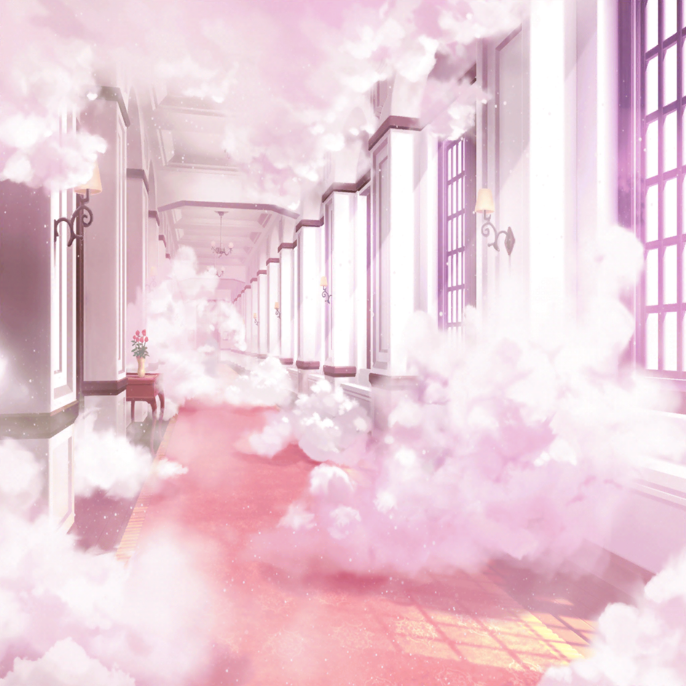

弦巻家 廊下
ひまり
警備厳重すぎ……！
もー、これじゃ全然思うように探索できないよ〜
蘭
ちょっと、声大きいって！
モカ
けど、ずっとこの棚の後ろに隠れててもしょうがないよー。
なんとかして先に進まないと
つぐみ
うーん……けど、このお屋敷の造りがよくわからないから
うかつに進めないよね……どうしたらいいかなあ
ひまり
こころちゃんの家って広いから、
ナビアプリ開いたら案内してくれたりしないかなあ……
モカ
『弦巻家 お宝』
……んー、ダメだ。出ないね〜
蘭
出るわけないじゃん……
フェスタ、正面突破だけはないからね
巴
な、なんでアタシの考えてることがわかったんだよ！？
蘭
さっき、見つかりそうになって警報と同時に
黒服の人達にめっちゃ追いかけられたじゃん！
慎重にいかないと、またああなるんだって
花音
ふ、ふええ〜！ ふええ〜〜！
つぐみ
今……花音さんの声がしなかった！？
ひまり
私にも聞こえた！
花音
迷子になっちゃったよぉ〜！ ど、どうしよう〜
つぐみ
花音さん、迷子だって……！
大丈夫かな？
蘭
けど、松原さんもハロハピのメンバーでしょ？
あたし達を捕まえるための囮じゃないの？
モカ
花音先輩、演技下手すぎるよー……
めちゃわざとらしいし
花音
このままじゃ、ここで野宿になっちゃうよ〜！
助けて〜……！
一同
……
巴
なんかさ、花音さんがあれだけ一生懸命演技してくれてるのに
スルーしてるのも申し訳なくなってきたんだけど……
野宿って……なあ、行ってみないか？
蘭
……わかった。
慎重に松原さんに近付こう
つぐみ
か、花音さ〜ん！ 大丈夫ですかっ！？
蘭
バリスタ！ 急に近づいたら危ないよ！
この辺にも罠があるかも……
モカ
けど、この辺めちゃ警備ゆるくない？ もしかして……
花音
つ、つぐみちゃん……ごめんねっ！
つぐみ
！？ し、しまった！

ひまり
ば、バリスタ！？
怪盗ハロハッピー
怪盗団の皆、ようこそ弦巻邸へ！
そして……つぐみちゃん、ようこそ私の腕の中へ
巴
は、ハロハッピー！
蘭
バリスタっ！
……って、知らないうちに黒服に包囲されてる！？
モカ
いやー、罠にかかったのはあたし達だったかあ。
やっちまった〜
ひまり
えー！ 私がハロハッピーに捕まりたかった！
バリスタ、ずるいよ〜
蘭
バカ！ こんな時に何言ってんの！？
怪盗ハロハッピー
君達は完全に包囲されている。
さあ、どうするかな？
つぐみ
み、みんな！ 私のことはいいから先に進んでっ！
蘭
さ、先に進むって言ってもどうしたら……！？
巴
しょ……
モカ
正面突破？
巴
……しかなくないか、もう！？
誰かがハロハッピーのスキをついて、
正面から突っ込むしかないって！
ひまり
で、でも……どうしたらハロハッピーにスキができるかな？
巴
おいキューティ、なんかスキがつけるような
瀬田先輩のエピソードないのか！？
ひまり
ないよぉ〜！ だって薫先輩、いつもかっこいいし……
蘭
はあ……
モカ
ハロハッピーさん、好きな食べ物ってなんですかー？
怪盗ハロハッピー
ザッハトルテとヴィシソワーズさ
モカ
それ、どういう食べ物か知ってます？
怪盗ハロハッピー
ああ……もちろんさ。とてもおいしくて儚い食べ物だろう？
蘭
ダメだ、言ってることよくわかんないけど、
スキは作れそうにないね
巴
モカ、バトンタッチだ！
ここから先はアタシに任せてくれ
ひまり
ま、任せるってどうするつもり？
巴
ハロハッピー！ アタシが相手になる。
だから他のメンバーのことは見逃してくれ
怪盗ハロハッピー
なるほど、おもしろい！
だが、私との勝負に勝たなければつぐみちゃんを
解放することはできないよ
巴
ああ、やってやるさ！
スカーレット、ハラペコ、キューティ！
先にいってお宝をゲットしてきてくれっ。あとで必ず合流する！
巴
さあ、来い！ ハロハッピー！
モカ
なんかよくわかんないけど、とりあえず
先進んどこっか
ひまり
フェスタ〜！ バリスタ〜！ あとで必ず会おうねーっ！！
蘭
まずはあたし達でセンサーを解除できる
スイッチがないか探してみよう！